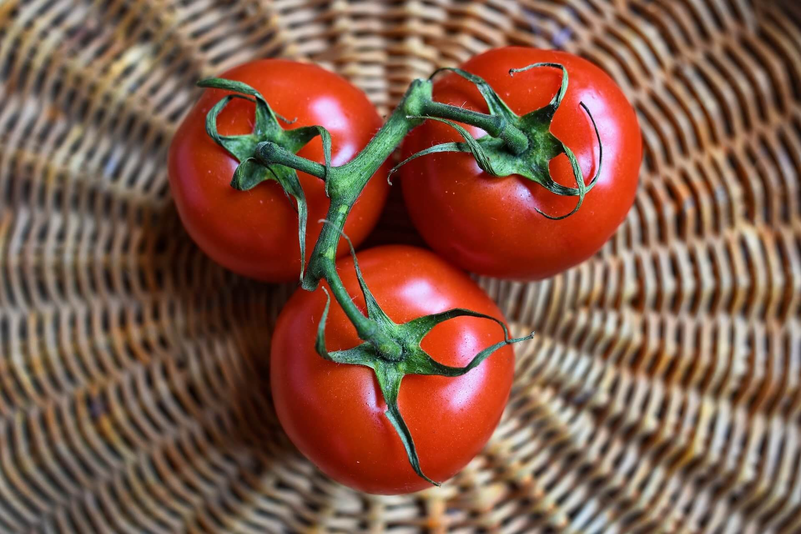

🍖🥬🍉 LISTA DEL SUPER 🍖🥬🍉
Frutas
🍌 Cambur 🍌
🍍 Piña 🍍
🍓 Fresa 🍓
Carnes
🥩 Res 🥩
🍗 Pechuga de pollo 🍗
🍖 Cerdo 🍖
Verduras
🥦 Brócoli 🥦
🥕 Zanahoria 🥕
🍅 Tomate 🍅

Referencia de tomates
🧘♂️❣️ Creado con amor y paciencia ❣️🧘♂️